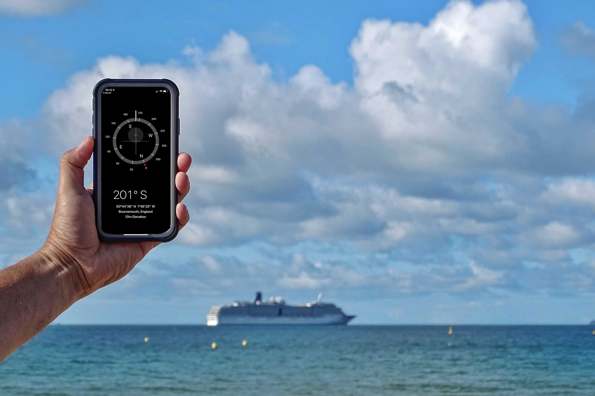

Desde el Puerto de Buenos Aires: los precios para tomar un crucero, que siguen a valores similares a los de hace tres años
Después de dos años, este verano vuelven los grandes barcos a la terminal porteña, con itinerarios por Brasil, la Patagonia y la Antártida; sin aéreos y con la posibilidad de disfrutar tarifas prepandemia, que todavía no se recuperaron en dólares
Turismo: expectativas y desafíos en Catamarca
La provincia decidió apostar al posicionamiento del destino, que es para muchos uno de los secretos naturales mejores guardados del país.
Cuánto costará vacacionar en Río de Janeiro tras la apertura de la nueva ruta aérea desde Mendoza
A partir de enero, la provincia contará con vuelos directos a esa ciudad brasileña, con dos frecuencias semanales.
Estambul, destino turístico nº 1 de Europa este verano
Estambul es el único destino de Europa que se recupera de la pandemia y consigue recibir más turistas que en 2019.
Desde el Puerto de Buenos Aires: los precios para tomar un crucero, que siguen a valores similares a los de hace tres años

Después de dos años, este verano vuelven los grandes barcos a la terminal porteña, con itinerarios por Brasil, la Patagonia y la Antártida; sin aéreos y con la posibilidad de disfrutar tarifas prepandemia, que todavía no se recuperaron en dólares
10 de Octubre de 2022
Los cruceros están de regreso. Después de dos veranos vuelven los grandes barcos al puerto de Buenos Aires, en una temporada que se presenta auspiciosa, similar a la prepandemia. Con barcos que harán itinerarios a las playas de Brasil y también con más alternativas para navegar hacia el sur y llegar a la Antártida, una de las regiones más buscadas, especialmente por extranjeros. Si bien la temporada pasada llegaron algunos cruceros, estuvo lejos del movimiento al que la terminal porteña está acostumbrada: el Covid y la prohibición brasileña a las embarcaciones provenientes del exterior jugaron en contra. Esta vez, las cosas son diferentes. Ya no corren más las incómodas restricciones a bordo, como la suspensión del servicio de buffet o los aforos limitados en salones y cubiertas. De manera sorprendente, todo volvió a la normalidad y los cruceros, de los más castigados por la pandemia, sacaron a relucir su poder de resiliencia.
Tampoco la crisis económica argentina desalentó la llegada de barcos. Para la temporada que se extiende entre octubre y abril, está prevista la recalada de 129 cruceros, muchos con itinerarios circulares, que comienzan y terminan en Buenos Aires. También llegarán nueve barcos por primera vez al puerto, como el National Geographic Endurance, Oosterdam, Sapphire Princess, Silver Wind y Fridtjof Nansen, que harán itinerarios hacia el sur. El MSC Seaview, MSC Preziosa, Silver Moon y Seabourn Ventura, que pondrán proa hacia las costas de Brasil y Uruguay. Se estima que por la terminal de cruceros de Buenos Aires pasarán 410.000 pasajeros. Los puertos de Madryn y Ushuaia también funcionarán a pleno, con más recaladas que en las temporadas previas al coronavirus.
“Como empresa global, nos adaptamos a cada mercado, hay que aprender a operar con los problemas de cada país. El sudamericano y especialmente el argentino son muy importantes, tienen un valor alto para nosotros, porque Buenos Aires fue el primer destino al que llegó un buque de Costa cuando partió de Génova en 1948″, explica Fernando Joselevich, Country Manager de Costa Cruceros para la Argentina sobre la apuesta de la naviera a realizar la temporada más extensa de su historia en la región (entre principio de diciembre y abril). Además, agrega: “Estamos sorprendidos, hay una demanda reprimida, vamos a tener niveles de ocupación similar a la prepandemia”.